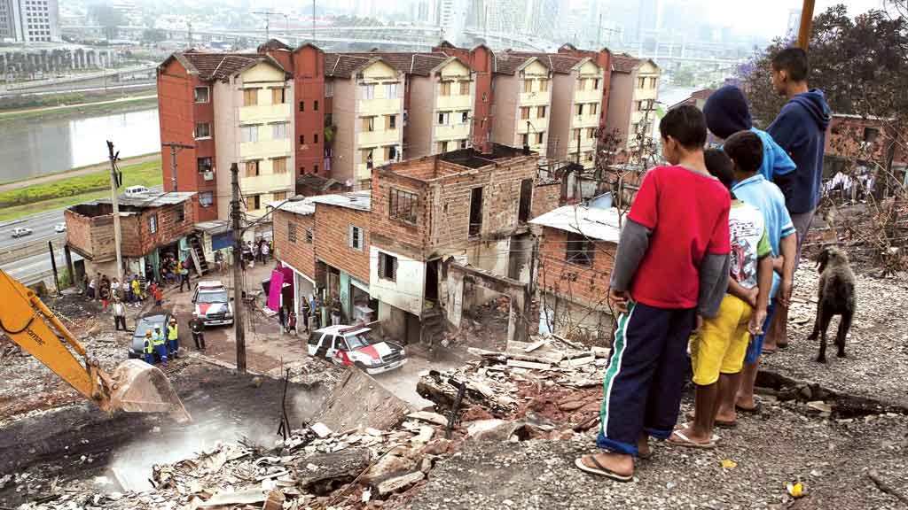

O Brasil enfrenta atualmente uma grave problemática de desigualdade social, sendo classificado pela Organização das Nações Unidas (ONU) como um dos países mais desiguais do mundo, ocupando a 8ª posição nesse preocupante ranking. Essa disparidade se agravou ainda mais com a pandemia da Covid-19, resultando em um recorde de desigualdade medida pelo índice de Gini. No primeiro trimestre deste ano, o índice atingiu a marca de 0,674, em comparação com 0,642 no ano anterior, estabelecendo um novo recorde histórico. Quanto mais próximo de 1 esse índice, maior é a concentração de renda e a desigualdade social no país. Diante desse cenário alarmante, surge o questionamento sobre qual Brasil estamos buscando construir. Será que essa busca por uma melhor condição de vida abrange igualmente os pobres e a população em situação de vulnerabilidade, ou se restringe apenas à elite? É necessário refletir sobre a inclusão de todos os segmentos da sociedade nesse processo de busca por uma sociedade mais justa e igualitária, em que a melhoria das condições de vida alcance todos os estratos socioeconômicos. A superação da desigualdade social exige ações efetivas que promovam a inclusão e o acesso equitativo a oportunidades, recursos e serviços básicos para todos os cidadãos.
Uma das consequências preocupantes desse cenário desigual é o aumento alarmante do trabalho infantil. Com a taxa de desemprego e a pobreza excessiva em ascensão, observou-se um aumento de 26% no trabalho infantil durante o período da pandemia. Antes da crise sanitária, a incidência de trabalho infantil era de 17,5 por 1.000 crianças, e após a pandemia, esse número subiu para 21,2 por 1.000. Essas estatísticas reforçam a necessidade urgente de políticas públicas efetivas e abrangentes para combater a desigualdade social e garantir uma melhor condição de vida para todos os brasileiros, especialmente os mais vulneráveis. É fundamental que sejam implementadas medidas que promovam a geração de empregos dignos, a redução da pobreza e a proteção dos direitos das crianças, visando construir um país mais justo e igualitário para todos. A busca pela igualdade social no Brasil não é uma tarefa fácil, mas é um desafio que precisa ser encarado de frente. Requer um compromisso conjunto de governantes, sociedade civil e setor privado para criar um ambiente propício à inclusão e à redistribuição de oportunidades. Ações afirmativas, investimentos em educação de qualidade, programas de transferência de renda e incentivos para o desenvolvimento econômico em regiões mais desfavorecidas são algumas das estratégias necessárias para construir um país mais equitativo. A luta pela igualdade social não é apenas uma questão de justiça, mas também de desenvolvimento sustentável e fortalecimento da democracia. Um país onde todos tenham a oportunidade de viver com dignidade e ter.